# Source velocity functions adapted from the package climetrics after applying some corrections described below # source("/storage/simple/projects/t_cesab/brunno/Exposure-SDM/R/velocity_functions.R")source(here::here("R/velocity_functions.R"))
this is a test
Here we test if bioshifts function generates meaningful results. As a first step, we simulate a gradient with increasing temperatures in the North and South direction to test if the velocity functions generate meaningful results.
2Simulate a environmental gradient
## make rastergrad_rast <-rast(ext(c(-50,50,-50,50)), res =1, crs="lonlat")lat <-xyFromCell(grad_rast, cell =cells(grad_rast))[,2] rast_values <-ifelse(lat<0, -lat^3, lat^3)rast_values =abs(rast_values-max(rast_values))grad_rast[] <- rast_valuesvelocity_map(grad_rast, main="Dummy gradient North South")
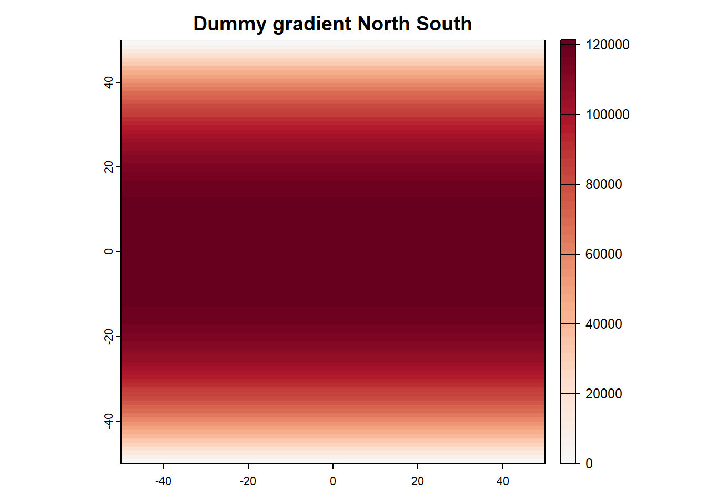
plot(grad_rast[], lat,xlab ="Dummy temperature value", ylab ="Dummy latitude value")
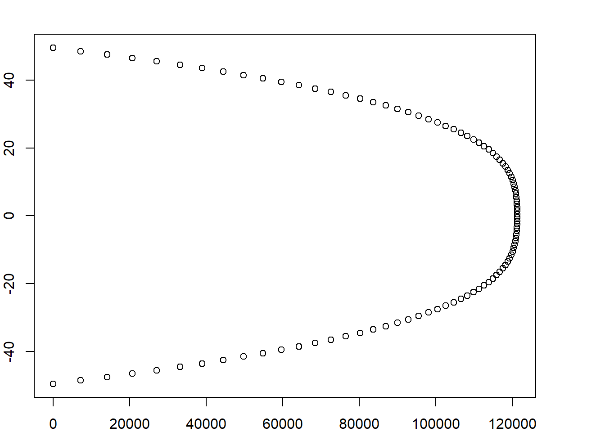
A simulated environmental gradient with a dummy latitudinal gradient
3Calculate the spatial gradient
spgrad_test <-spatial_grad(grad_rast)
Loading required namespace: fields
4Map angle
angle_rast <- grad_rastangle_rast[spgrad_test$icell] <- spgrad_test$angleangle_map(angle_rast, main ="Angle")
Warning in cos(radial.pos[i, ]) * lengths[i, ]: longer object length is not a
multiple of shorter object length
Warning in sin(radial.pos[i, ]) * lengths[i, ]: longer object length is not a
multiple of shorter object length
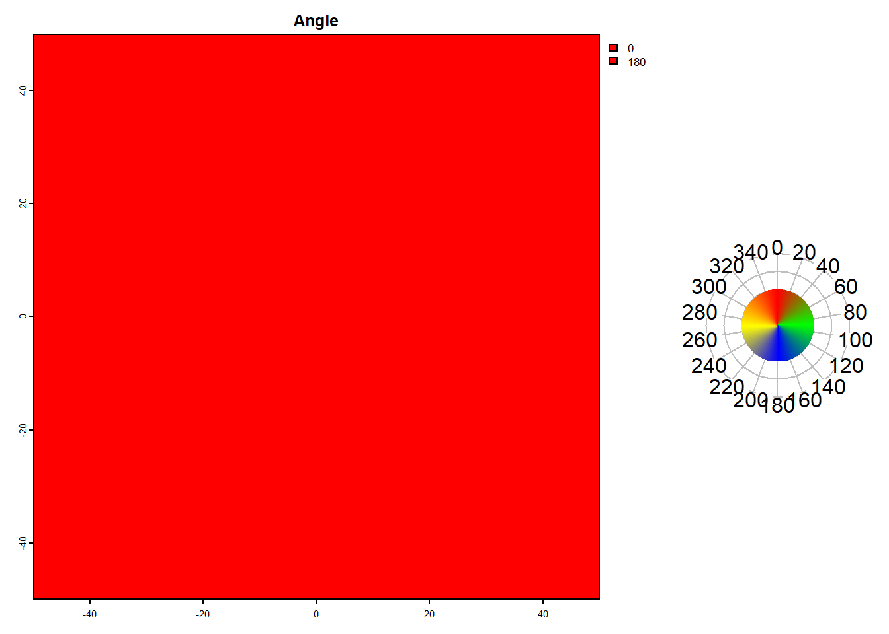
This is the angle of the environmental gradient. Here, temperature decreases towards the poles. Therefore, the angle at the north hemisphere is 180 (south). Likewise, at the south hemisphere the angle in 0 (north), meaning temperatures increasing towards the equator.
5Map gradient NS and gradient undirectional
grad_N_rast <- grad_rastgrad_N_rast[spgrad_test$icell] <- spgrad_test$NSgrad_rast <- grad_rastgrad_rast[spgrad_test$icell] <- spgrad_test$Grad{par(mfrow=c(1,2))velocity_map(grad_rast, main ="Gradient undirectional")velocity_map(grad_N_rast, main ="Gradient North")par(mfrow=c(1,1))}
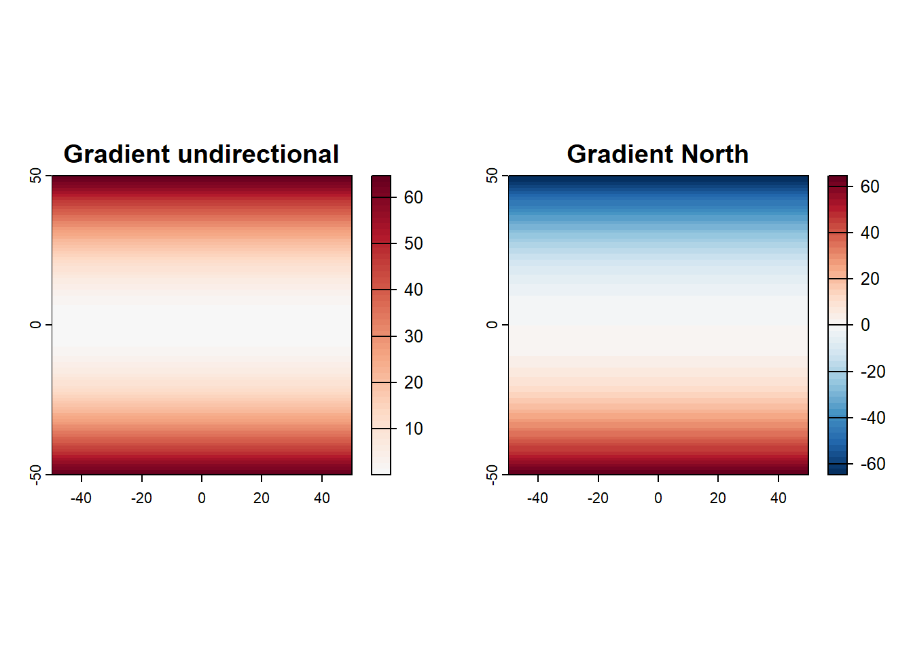
# correlation grad and grad Northplot(spgrad_test$NS,spgrad_test$Grad,xlab ="Gradient NS",ylab ="Gradient undirectional")
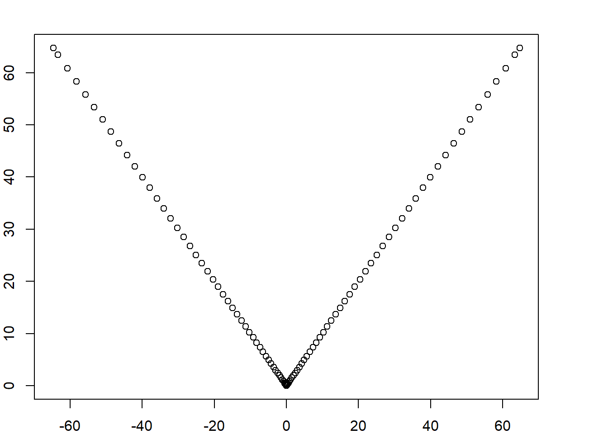
According to the exponential simulated gradient, the gradients calculated and shown here are also more intense towards the poles. Note that the gradient North is positive in the south hemisphere because temperature increase from the south pole to the equator, while the gradient North is negative at the North hemisphere because temperatures decrease from the equator towards the north pole.
6Calculate velocities
## Create a constant trendtrend <- grad_rasttrend[] <-2vel <-gVelocity(grad = spgrad_test,slope = trend)vel_NS <-gVelocity(grad = spgrad_test,slope = trend,grad_col ="NS")# correlation grad and vel{par(mfrow=c(1,2))plot(log(spgrad_test$Grad), vel$GradVel[spgrad_test$icell][,1],xlab ="Gradient (log)",ylab ="Velocity")velocity_map(vel$GradVel, main ="Velocity undirectional")par(mfrow=c(1,1))}
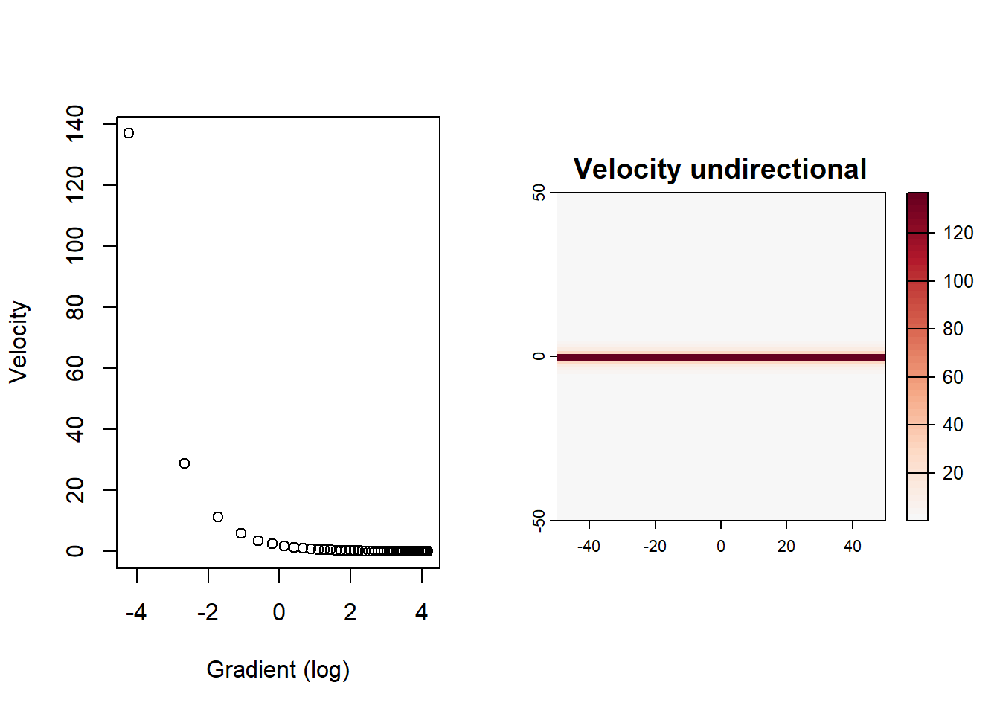
# correlation grad and vel North{par(mfrow=c(1,2))plot(log(spgrad_test$Grad), vel_NS$GradVel[spgrad_test$icell][,1],xlab ="Gradient (log)",ylab ="Velocity North")velocity_map(vel_NS$GradVel, main ="Velocity North")par(mfrow=c(1,1))}
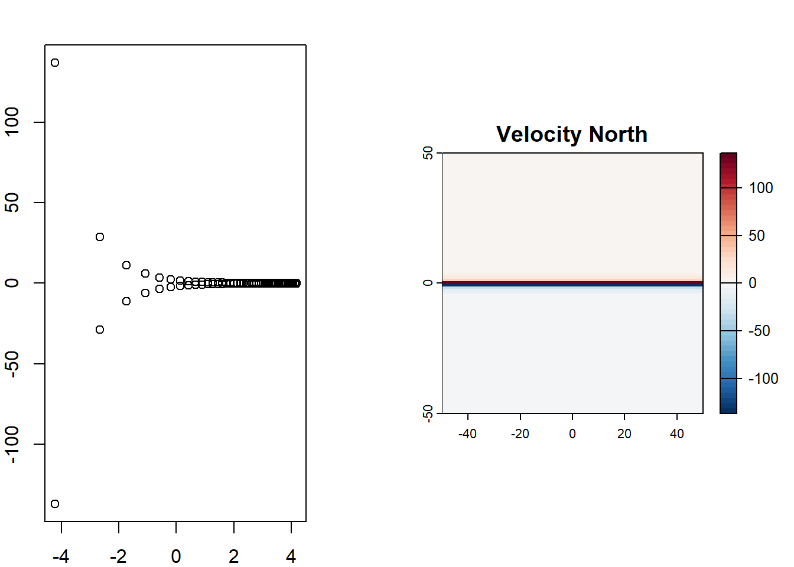
Greatest velocity when gradient is close to zero. Velocities NS are positive in the North hemisphere and negative in the south hemisphere, representative of the direction of the velocity gradient (away of the tropics).
7Get velocity NS from undirection velocity + angle
Re-run everything with a more complex environmental gradient
8.1Simulate a environmental gradient
## make raster grad_rast <-rast(ext(c(-50,50,-50,50)), res =1, crs="lonlat") lat <-xyFromCell(grad_rast, cell =cells(grad_rast))[,2] rast_values <-ifelse(lat<0, -lat^3, lat^3) rast_values =abs(rast_values-max(rast_values)) lon <-xyFromCell(grad_rast, cell =cells(grad_rast))[,1] rast_values2 <-ifelse(lon<0, -lon^3, lon^3) rast_values2 =abs(rast_values2-max(rast_values2)) rast_values = rast_values+rast_values2 grad_rast[] <- rast_values velocity_map(grad_rast, main="Dummy gradient North South")
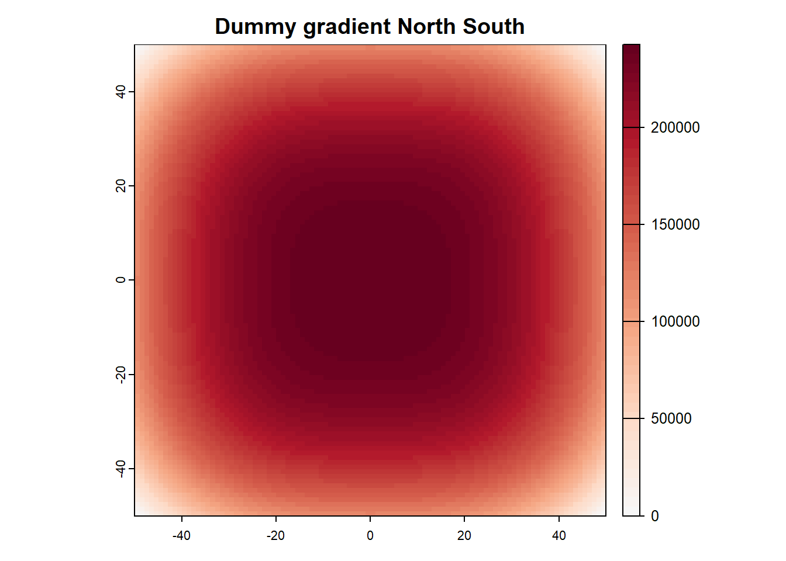
plot(grad_rast[], lat, xlab ="Dummy temperature value", ylab ="Dummy latitude value")
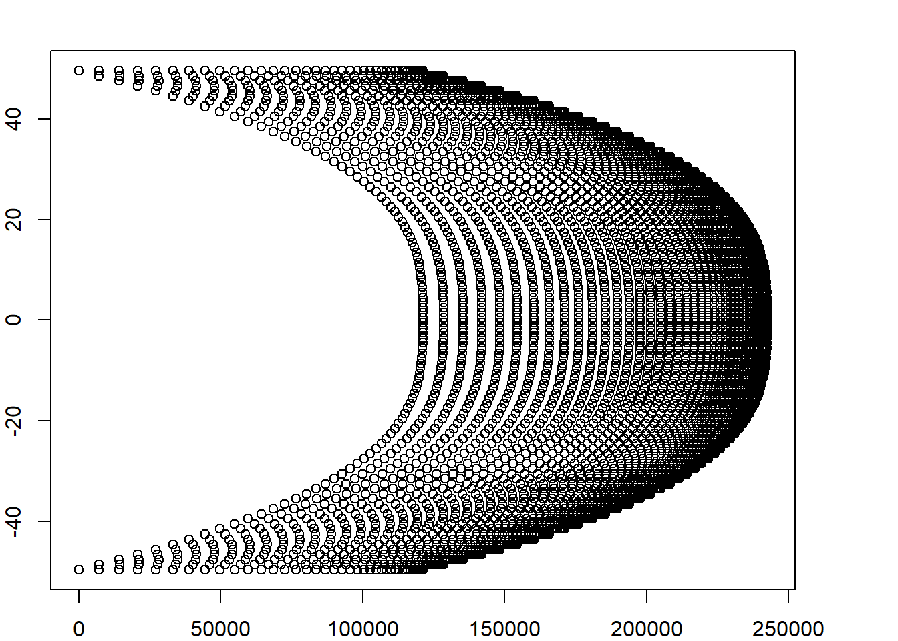
A simulated environmental gradient with a dummy latitudinal gradient
8.2Calculate the spatial gradient
spgrad_test <-spatial_grad(grad_rast)
8.3Map angle
angle_rast <- grad_rast angle_rast[spgrad_test$icell] <- spgrad_test$angle angle_map(angle_rast, main ="Angle")
Warning in cos(radial.pos[i, ]) * lengths[i, ]: longer object length is not a
multiple of shorter object length
Warning in sin(radial.pos[i, ]) * lengths[i, ]: longer object length is not a
multiple of shorter object length
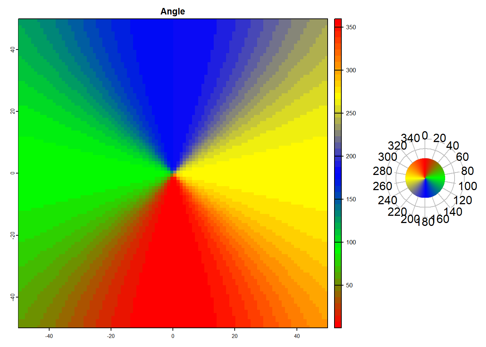
This is the angle of the environmental gradient. Here, temperature decreases towards the poles. Therefore, the angle at the north hemisphere is 180 (south). Likewise, at the south hemisphere the angle in 0 (north), meaning temperatures increasing towards the equator.
# correlation grad and grad North plot(spgrad_test$NS,spgrad_test$Grad, xlab ="Gradient NS", ylab ="Gradient undirectional")
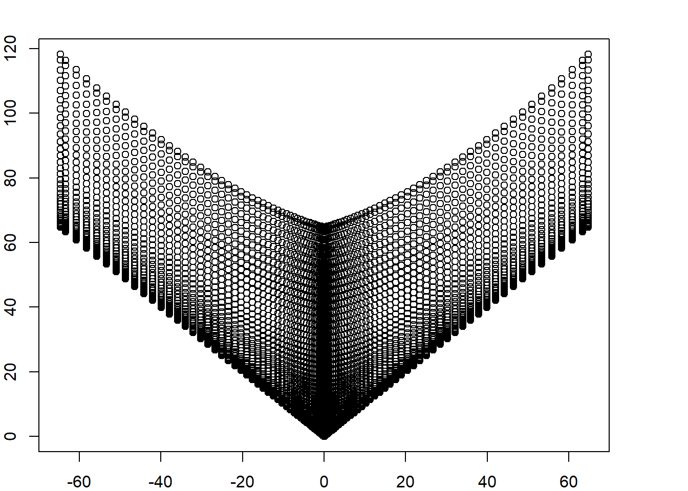
According to the exponential simulated gradient, the gradients calculated and shown here are also more intense towards the poles. Note that the gradient North is positive in the south hemisphere because temperature increase from the south pole to the equator, while the gradient North is negative at the North hemisphere because temperatures decrease from the equator towards the north pole.
8.5Calculate velocities
## Create a constant trend trend <- grad_rast trend[] <-2vel <-gVelocity(grad = spgrad_test, slope = trend) vel_NS <-gVelocity(grad = spgrad_test, slope = trend, grad_col ="NS") # correlation grad and vel { par(mfrow=c(1,2)) plot(log(spgrad_test$Grad), vel$GradVel[spgrad_test$icell][,1], xlab ="Gradient (log)", ylab ="Velocity") velocity_map(vel$GradVel, main ="Velocity undirectional") par(mfrow=c(1,1)) }
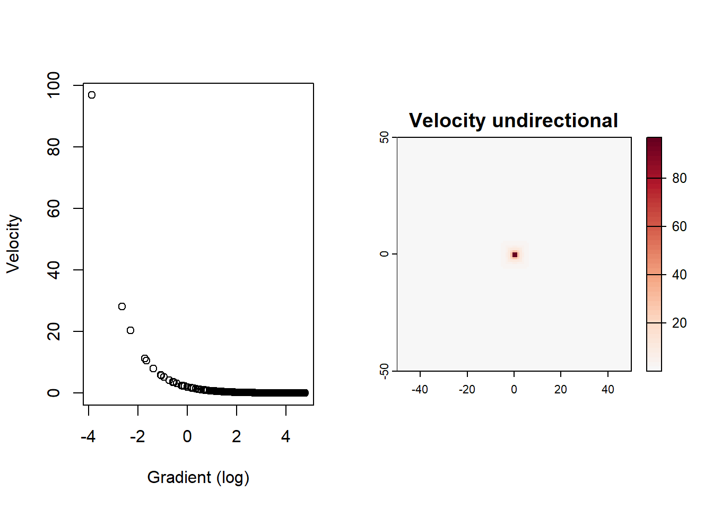
# correlation grad and vel North { par(mfrow=c(1,2)) plot(log(spgrad_test$Grad), vel_NS$GradVel[spgrad_test$icell][,1], xlab ="Gradient (log)", ylab ="Velocity North") velocity_map(vel_NS$GradVel, main ="Velocity North") par(mfrow=c(1,1)) }
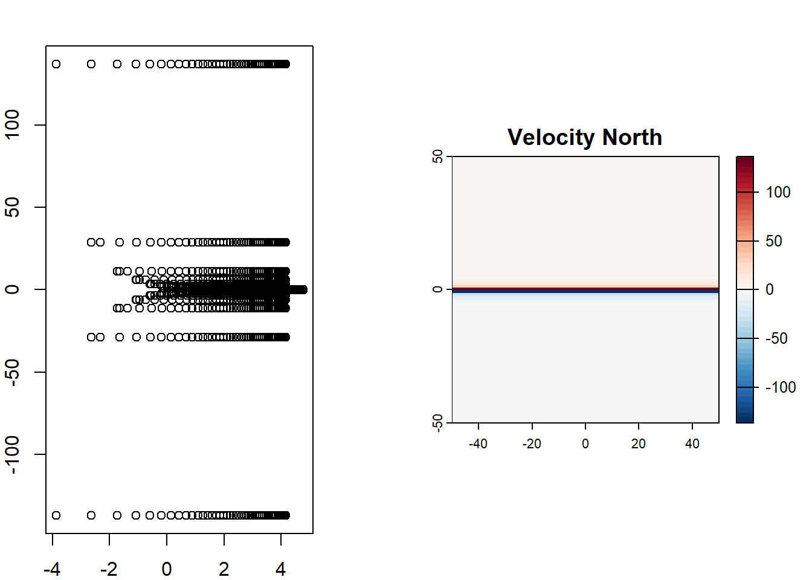
Greatest velocity when gradient is close to zero. Velocities NS are positive in the North hemisphere and negative in the south hemisphere, representative of the direction of the velocity gradient (away of the tropics).
8.6Get velocity NS from undirection velocity + angle
---title: "Testing the `bioshifts` function"author: "Brunno Oliveira"date: "`r format(Sys.time(), '%d %B, %Y')`"format: html: toc: true toc_float: true number-sections: true code-fold: false code-tools: true---# *Settings*```{r warning=FALSE,message=FALSE}list.of.packages <-c("terra", "ggplot2", "GGally", "data.table", "geodata", "tidyterra", "gridExtra")# new.packages <- list.of.packages[!(list.of.packages %in% installed.packages()[, "Package"])]# if(length(new.packages)) install.packages(new.packages)sapply(list.of.packages, require, character.only =TRUE)# Source velocity functions adapted from the package climetrics after applying some corrections described below # source("/storage/simple/projects/t_cesab/brunno/Exposure-SDM/R/velocity_functions.R")source(here::here("R/velocity_functions.R"))```*this is a test**Here we test if `bioshifts` function generates meaningful results. As a first step, we simulate a gradient with increasing temperatures in the North and South direction to test if the velocity functions generate meaningful results.*# *Simulate a environmental gradient*```{r}## make rastergrad_rast <-rast(ext(c(-50,50,-50,50)), res =1, crs="lonlat")lat <-xyFromCell(grad_rast, cell =cells(grad_rast))[,2] rast_values <-ifelse(lat<0, -lat^3, lat^3)rast_values =abs(rast_values-max(rast_values))grad_rast[] <- rast_valuesvelocity_map(grad_rast, main="Dummy gradient North South")plot(grad_rast[], lat,xlab ="Dummy temperature value", ylab ="Dummy latitude value")```*A simulated environmental gradient with a dummy latitudinal gradient*# *Calculate the spatial gradient*```{r}spgrad_test <-spatial_grad(grad_rast)```# *Map angle*```{r}angle_rast <- grad_rastangle_rast[spgrad_test$icell] <- spgrad_test$angleangle_map(angle_rast, main ="Angle")```*This is the angle of the environmental gradient. Here, temperature decreases towards the poles. Therefore, the angle at the north hemisphere is 180 (south). Likewise, at the south hemisphere the angle in 0 (north), meaning temperatures increasing towards the equator.*# *Map gradient NS and gradient undirectional*```{r}grad_N_rast <- grad_rastgrad_N_rast[spgrad_test$icell] <- spgrad_test$NSgrad_rast <- grad_rastgrad_rast[spgrad_test$icell] <- spgrad_test$Grad{par(mfrow=c(1,2))velocity_map(grad_rast, main ="Gradient undirectional")velocity_map(grad_N_rast, main ="Gradient North")par(mfrow=c(1,1))}# correlation grad and grad Northplot(spgrad_test$NS,spgrad_test$Grad,xlab ="Gradient NS",ylab ="Gradient undirectional")```*According to the exponential simulated gradient, the gradients calculated and shown here are also more intense towards the poles. Note that the gradient North is positive in the south hemisphere because temperature increase from the south pole to the equator, while the gradient North is negative at the North hemisphere because temperatures decrease from the equator towards the north pole.*# *Calculate velocities*```{r}## Create a constant trendtrend <- grad_rasttrend[] <-2vel <-gVelocity(grad = spgrad_test,slope = trend)vel_NS <-gVelocity(grad = spgrad_test,slope = trend,grad_col ="NS")# correlation grad and vel{par(mfrow=c(1,2))plot(log(spgrad_test$Grad), vel$GradVel[spgrad_test$icell][,1],xlab ="Gradient (log)",ylab ="Velocity")velocity_map(vel$GradVel, main ="Velocity undirectional")par(mfrow=c(1,1))}# correlation grad and vel North{par(mfrow=c(1,2))plot(log(spgrad_test$Grad), vel_NS$GradVel[spgrad_test$icell][,1],xlab ="Gradient (log)",ylab ="Velocity North")velocity_map(vel_NS$GradVel, main ="Velocity North")par(mfrow=c(1,1))}```*Greatest velocity when gradient is close to zero. Velocities NS are positive in the North hemisphere and negative in the south hemisphere, representative of the direction of the velocity gradient (away of the tropics).*# *Get velocity NS from undirection velocity + angle*```{r}vel_NS_2 <- vel$GradVel /cos(deg_to_rad(vel$GradAng))plot(vel_NS$GradVel[][,1], vel_NS_2[][,1],xlab ="Velocity NS",ylab ="Velocity NS obtained from angle")all.equal(vel_NS$GradVel,vel_NS_2)```# *Extra**Re-run everything with a more complex environmental gradient*## *Simulate a environmental gradient*```{r}## make raster grad_rast <-rast(ext(c(-50,50,-50,50)), res =1, crs="lonlat") lat <-xyFromCell(grad_rast, cell =cells(grad_rast))[,2] rast_values <-ifelse(lat<0, -lat^3, lat^3) rast_values =abs(rast_values-max(rast_values)) lon <-xyFromCell(grad_rast, cell =cells(grad_rast))[,1] rast_values2 <-ifelse(lon<0, -lon^3, lon^3) rast_values2 =abs(rast_values2-max(rast_values2)) rast_values = rast_values+rast_values2 grad_rast[] <- rast_values velocity_map(grad_rast, main="Dummy gradient North South") plot(grad_rast[], lat, xlab ="Dummy temperature value", ylab ="Dummy latitude value")```*A simulated environmental gradient with a dummy latitudinal gradient*## *Calculate the spatial gradient*```{r}spgrad_test <-spatial_grad(grad_rast)```## *Map angle*```{r}angle_rast <- grad_rast angle_rast[spgrad_test$icell] <- spgrad_test$angle angle_map(angle_rast, main ="Angle")```*This is the angle of the environmental gradient. Here, temperature decreases towards the poles. Therefore, the angle at the north hemisphere is 180 (south). Likewise, at the south hemisphere the angle in 0 (north), meaning temperatures increasing towards the equator.*## *Map gradient NS and gradient undirectional*```{r}grad_N_rast <- grad_rast grad_N_rast[spgrad_test$icell] <- spgrad_test$NS grad_rast <- grad_rast grad_rast[spgrad_test$icell] <- spgrad_test$Grad {par(mfrow=c(1,2)) velocity_map(grad_rast, main ="Gradient undirectional") velocity_map(grad_N_rast, main ="Gradient North") par(mfrow=c(1,1)) } # correlation grad and grad North plot(spgrad_test$NS,spgrad_test$Grad, xlab ="Gradient NS", ylab ="Gradient undirectional")```*According to the exponential simulated gradient, the gradients calculated and shown here are also more intense towards the poles. Note that the gradient North is positive in the south hemisphere because temperature increase from the south pole to the equator, while the gradient North is negative at the North hemisphere because temperatures decrease from the equator towards the north pole.*## *Calculate velocities*```{r}## Create a constant trend trend <- grad_rast trend[] <-2vel <-gVelocity(grad = spgrad_test, slope = trend) vel_NS <-gVelocity(grad = spgrad_test, slope = trend, grad_col ="NS") # correlation grad and vel { par(mfrow=c(1,2)) plot(log(spgrad_test$Grad), vel$GradVel[spgrad_test$icell][,1], xlab ="Gradient (log)", ylab ="Velocity") velocity_map(vel$GradVel, main ="Velocity undirectional") par(mfrow=c(1,1)) } # correlation grad and vel North { par(mfrow=c(1,2)) plot(log(spgrad_test$Grad), vel_NS$GradVel[spgrad_test$icell][,1], xlab ="Gradient (log)", ylab ="Velocity North") velocity_map(vel_NS$GradVel, main ="Velocity North") par(mfrow=c(1,1)) }```*Greatest velocity when gradient is close to zero. Velocities NS are positive in the North hemisphere and negative in the south hemisphere, representative of the direction of the velocity gradient (away of the tropics).*## *Get velocity NS from undirection velocity + angle*```{r}vel_NS_2 <- vel$GradVel /cos(deg_to_rad(vel$GradAng)) plot(vel_NS$GradVel[][,1], vel_NS_2[][,1], xlab ="Velocity NS", ylab ="Velocity NS obtained from angle") all.equal(vel_NS$GradVel,vel_NS_2)```